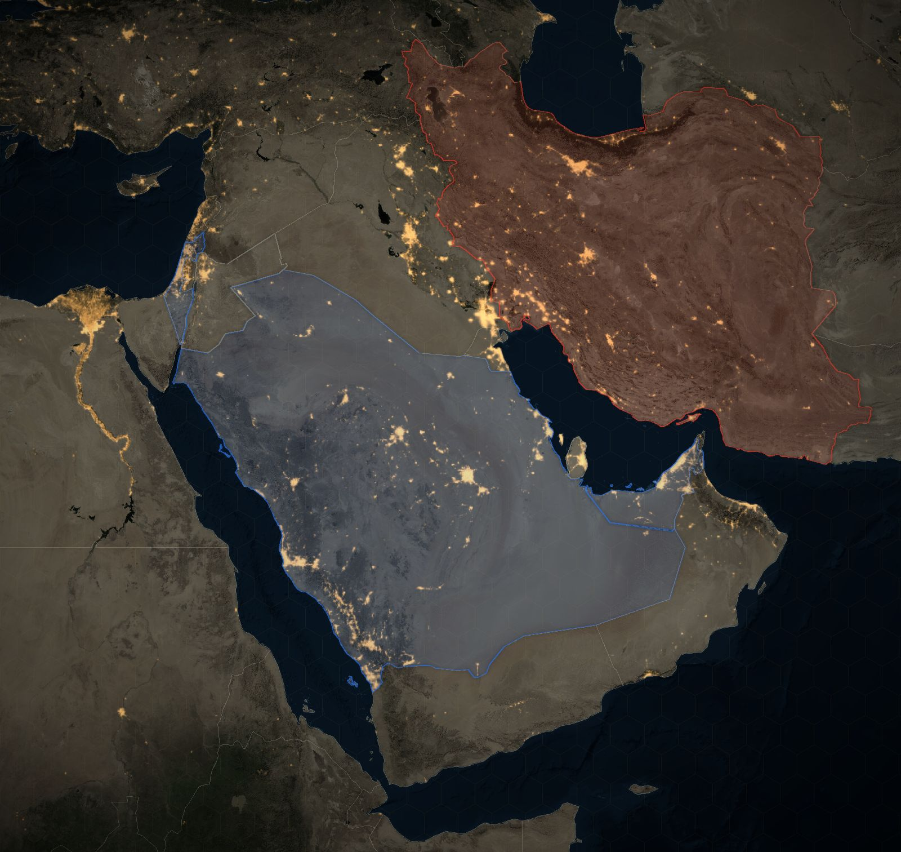

The next war with the Islamic Republic
Where things stand right now, live on a 3D map of the region: where strikes are reported, how tense it is, the latest from the ground. Then replay the Twelve-Day War and the 2026 war strike by strike, or simulate the next round and let the model find the plan that beats the experts.
How this works
The model is printed here once the page has loaded.
The past wars on this board, and their sources
- True Promise I (April 2024) 2024-04-13 to 2024-04-19
On 13 and 14 April 2024 the Islamic Republic fired about 170 drones, over 30 cruise missiles and over 120 ballistic missiles at Israel, its first direct attack. Israel, the US, the UK, France and Jordan shot down almost all of them, and Israel answered on 19 April with a strike near Isfahan.
- True Promise II and Days of Repentance (October 2024) 2024-10-01 to 2024-10-26
On 1 October 2024 the Islamic Republic fired about 200 ballistic missiles at Israel, hitting Nevatim and Tel Nof. On 26 October over 100 Israeli aircraft struck 20 sites in Iran, destroying air defences and missile fuel mixers.
- The Twelve-Day War 2025-06-13 to 2025-06-24
Israel opened with over 200 jets on 13 June 2025, killing the top commanders and hitting nuclear and missile sites. The Islamic Republic fired over 550 ballistic missiles and over 1,000 drones; the US bombed Fordow, Natanz and Isfahan on 22 June.
- The 2026 war (Epic Fury and Roaring Lion) 2026-02-28 to 2026-04-08
The US and Israel struck together on 28 February 2026 and killed Ali Khamenei on day one. The Islamic Republic fired at Israel and at US bases and oil across the Persian Gulf, shut Hormuz, and kept firing for 40 days until a ceasefire brokered by Pakistan.
- The 13 nights of July 2026 2026-07-07 to 2026-07-29
After the Islamic Republic hit three ships in Hormuz on 7 July 2026, the US struck Iran for 13 nights in a row and brought back its naval blockade. The Islamic Republic fired at US bases in Bahrain, Kuwait, Qatar and Jordan.
- The tanker-for-tanker round (30 August to mid-September 2026) 2026-08-30 to 2026-09-15
The US hit launchers, an airport, IRGC sites and the regime's own tankers; the Islamic Republic fired missiles at US bases in Jordan, Kuwait and the UAE. Meanwhile the Houthis took the Bab el-Mandeb.
The experts who brief you, and what they published
- Institute for the Study of War and Critical Threats Project Washington think tank; writes the daily Iran Update
The strikes broke much of the missile force's ability to fight, even where launchers survived, and made rebuilding slow. Source
- Behnam Ben Taleblu Senior director of the Iran program, Foundation for Defense of Democracies
The regime is headless and weak but still lethal, and its ballistic missiles are the weapon that matters. Source
- JINSA (Jewish Institute for National Security of America) Washington defence think tank; report The Eroding Shield by Ari Cicurel
Defences stop over 90%, but the war is a stockpile race that cheap drones and missiles can win unless offence kills launchers fast. Source
- CSIS (Mark Cancian and Chris Park) Washington think tank; munitions and missile defence analysts
US interceptor stocks are down to about a third for Patriot and about half for THAAD: enough for Iran, a risk for any wider war. Source
- The Washington Institute (Michael Eisenstadt and Farzin Nadimi) Washington think tank; military analysts of Iran and the Persian Gulf
A battered regime will pour what it has into missiles and drones, its most effective weapons, and that reliance could become its weak point. Source
- Atlantic Council (Matthew Kroenig and Nate Swanson) Washington think tank; Scowcroft Center and its Iran Strategy Project
The nuclear program is gone and can be bombed again; a memorandum with no follow-on deal is volatile and can slide back into war. Source
- Trita Parsi Executive vice president, Quincy Institute for Responsible Statecraft
More US escalation brings a wider war: the regime closes Hormuz, pushes the Houthis to shut the Red Sea, and hits Persian Gulf energy. Source
- Ali Vaez Iran Project director, International Crisis Group
The regime thinks it came out ahead by surviving and weaponising Hormuz; a lasting deal needs Israel reined in and the uranium found. Source
- Gen. Jack Keane (ret.) Former US Army vice chief of staff; Fox News senior strategic analyst
A return to full combat is inevitable once the Islamic Republic fires on US ships and partners, and Trump can order overwhelming force. Source
- Gen. Kenneth McKenzie (ret.) Former commander of US Central Command
Missiles now matter more than the nuclear file, and the regime's launchers are fewer and easier to watch than its claims suggest. Source
- Amos Yadlin Former head of Israeli military intelligence; heads MIND Israel
Before the 2026 war he urged planning for a surprise: the regime may act on revenge rather than logic, and in recent wars the side that struck first gained the edge. Source
- Gen. Dan Caine Chairman of the US Joint Chiefs of Staff (his views as reported)
Airstrikes alone are unlikely to meet the war's goals; a decisive defeat would need a large ground war that nobody is pushing. Source
Everything on the board comes from published reporting and analysis, each with its page. The experts' numbers are my reading of what each one published, not their words. This is a model to think with, not a forecast. Something wrong? Say it in the discussion below and I check it. Satellite imagery: NASA. Elevation: AWS Terrain Tiles.
Who strikes first in the next round, and how does it end?
Say it where other readers can answer you. Opinions, videos and corrections about this simulator are all in one place.
Discussion
The next war with the Islamic Republic
Your read of how it goes, a move I left out, an expert who belongs in the room, or a number I have wrong. Bring the source if you have one. What readers post is their words, not mine. My answers carry the Host tag.
Leave out anything private about anyone. The rules, what your account keeps, and what readers have changed so far